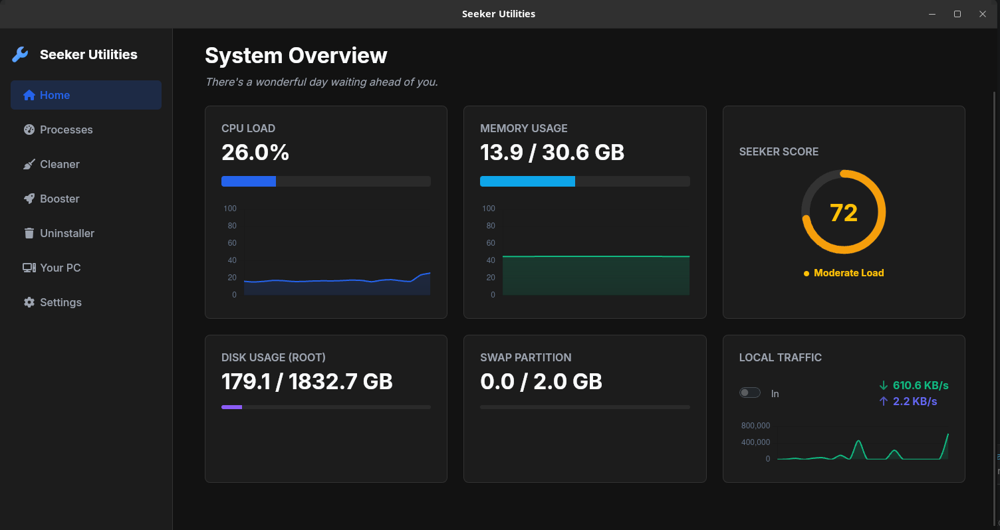

A lightweight, sharp, and open-source suite of tools designed to clean, optimize, and maintain your Linux systems with surgical precision.

Seeker Utilities bundles a set of reliable, privacy-respecting tools designed to help you maintain and optimize your PC with minimal effort and maximum transparency.
Safely remove junk files, cache, and temporary data to free up valuable disk space instantly.
Take control of startup programs to speed up boot times and reduce system background load.
Clear digital traces and disable intrusive telemetry options with just a few clicks.
Apply recommended system-level tweaks to improve overall responsiveness and stability.
Seeker Utilities performs safe, reversible optimizations. You can review changes before applying them.
Quickly analyze your system to identify performance issues.
See recommended actions and choose which to apply safely.
Apply selected optimizations with real-time feedback.
Keep your system healthy with recurring maintenance.
Join the community and start maintaining your PC the professional way. All releases are signed and published on GitHub.
Open Source • Lightweight • No Telemetry